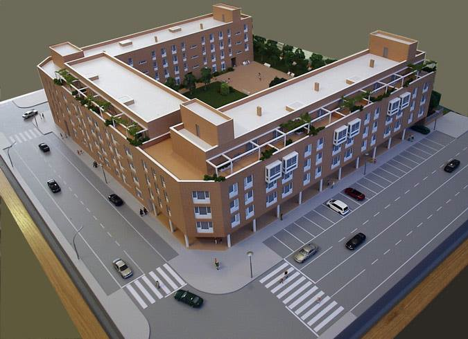

Relaciones de fuerza entre agentes o instituciones que luchan y buscan dominar y tener el monopolio de un tipo de capital eficiente (Sánchez y otros, 2007). Es un sistema estructurado de posiciones sociales que confieren a sus ocupantes una determinada situación (Aquiles, 2016). En otras palabras se concibe como una “red de relaciones objetivas entre posiciones sociales, históricamente constituidas alrededor de una actividad específica y de un bien, cuya acumulación despierta interés y es objeto de lucha. Los campos son microcosmos sociales relativamente autónomos que operan como mercados, donde se busca maximizar los beneficios específicos y donde las estrategias generales de optimización tienen formas, contenidos y puntos de aplicación específicos” (Diccionario iberoaméricano de filosofía de la educación, s/p). Es en lo campos donde se expresan las luchas de clases. Cada campo está constituido por una red de relaciones objetivas entre diferentes posiciones (Aquiles, 2017). “Los campos constan de productores, consumidores, distribuidores de un bien e instancias legitimadoras y reguladoras, cuyas características, reglas y conformación varían de acuerdo con su historia y relación con el campo de poder.” (Sánchez, 2007, p. 6)
Si tomaramos de ejemplo la incorporación de estudiantes a un posgrado veríamos entonces que el campo en ese contexto hace referencia a un campo académico visualizado como un espacio complejo compuesto por productores (investigadores y académicos), distribuidores (profesores e instancias de difusión), consumidores (estudiantes, investigadores y estudiosos) e instancias legitimadoras y distribuidoras del bien (universidades e institutos de investigación). El ingreso a este campo estará regulado a través de reglas impuestas por los sujetos dominantes, que tratarán de determinar la posesión de capital y habitus imperante (Sánchez, 2007).